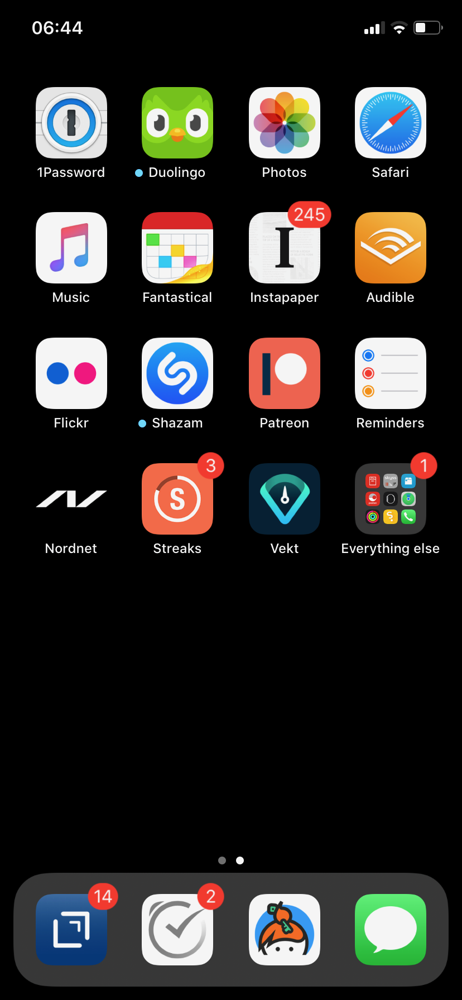

About
Me
Updated: 2020-03-08 13:03:85
I'm Eivind, this is my wiki. Here is by blog and this is my only social media thing @hjertnes.
I live at Stanghelle, right outside Bergen, Norway with my dogs and fiancè.
I currently work as a web developer, mostly using JavaScript, React and C#; in the past I have done a lot of PHP and Python. These days I mostly do Golang for fun. I have also done other kinds of work in past, mainly fundraising, bartending and IT work.
Wiki
Updated: 2020-03-08 13:03:85
I'm not sure what I am doing here. Anyways. I thought the one @jack have was very cool. The basic idea is that I'll just fill up this wiki with interesting stuff. Everything that isn't a blog post will probably end up here.
As I have been adding more stuff and extending this place I think this might replace my blog for a lot of stuff. Instead of writing blog posts this will probably turned into a nested structure of notes I do some extent keep updated.
It is made with org-mode, pandoc and netlify
It is generated from this org-file
Personal
Contact
Updated: 2020-03-08 13:03:85
- Keybase: hjertnes
- Email: me at hjertnes dot me
- Mastodon https://dog.estate/@hjertnes
Family
Updated: 2020-03-08 13:03:85
Our little family:
- Me
- Ingri, my fiance
- Ea, my daughter. Born in 2020.
- Luna our soon to be four year old black Portuguese Water Dog
- Molly out soon to be 1 year old brown Portuguese Water Dog
Now
Updated: 2020-03-08 13:03:85
- Writing API's in C# and front ends using React at sbanken.
- Shooting as much as possible with my X-Pro 2
- Trying to write as much as possible on this wiki
- Emacs and org-mode
- Keeping my life together with Drafts, and Bullet Journaling
- Working on some hobby projects
- Coding Golang
Using
Updated: 2020-04-09 16:04:66
Hardware
- Kindle
- Switch
- MacBook Pro 13" 2016
- ThinkPad X230
- iPhone 11 Yellow
- Apple Watch Series 4
- LG 27" 4K screen
- Apple Magic trackpad
- HHKB2
- Microsoft Skulpt Ergonomic mouse
- Fuji X-Pro 2
- 23mm f2
- 35mm f2
- 50mm f2
- 8mm f2.8
- Audio Technica m50x
- Fiio BTR3
Software
txt
Instead of using Dropbox I have a git repo with a naive shell script on each machine committing every minute if any changes and pulling and pushing. It contains all my most important text files and some images.
I use org-journal, and all my most important text files are organized in between 5 and 10 org documents
Thinkpad
- Shell: fish
- Firefox
- Emacs
MacBook
- 1Password
- ALfred
- Arq
- Bartender
- Basecamp
- CleanMyMac
- Default Folder X
- DraftsEmacs
- Firefox
- ForkLift
- GitKraken
- Photos
- iTerm
- Keybase
- Keyboard Maestro
- Lingon X
- Music.app
- OmniFocus
- Paw
- Plex
- Readkit
- Rocket
- Soulver
- Tot
- Visual Studio Code
- DataGrip
- Goland
- NordVPN
iPhone
- Reminders
- 1Password
- Soulver
- Duiolingo
- Safari
- Fantastical
- NordVPN
- Shortcuts
- Tot
- Drafts
- Keybase
- OmniFocus
- Flickr
- Mast
- Basecamp
- Netflix
- Audible
- Instapaper
- Overcast
- Music.app
- Plex
Bags
- Fjellreven Foldstack No.3 as my man purse.
- Synik 22. The thing I bring all my "daily carry" stuff to work
- Various Lowpro photography bags; including a large one for travel, plus a tiny one for my SD cards.
Coffee
- Moccamaster
- Hario Soto Magu travel mug
Pen and paper stuff
- Lamy 2000 Medium Nib
- YStudio brass pocket pen
- Classroom Friendly Sharpener.
- KUM Longpoint
- HUM Masterpoint
- Pilot Iroshizuku inks
- Field Notes
- LT1917: lined for writing and dotgrid for Bullet journaling; plus a five year journal.
- Field Notes DotGrid
- Blackwings
Services
- Github
- 1Password
- Instapaper.
- Apple Music
- iCloud for photos
Blogging
- Hugo
- Ox hugo
- FeedPress
Software development
- Go
- Svelte
- Postgresql
- Redis
- Emacs / VS Code / Goland
- DataGrip for database stuff
Homescreen
Updated: 2020-03-08 13:03:85
This is the homescreen of my iPhone 11. I have the Yellow. As of January 2020.

Top of my laptop
Updated: 2020-03-08 13:03:85
The top of my MacBook Escape as of January 2020. The photo is horrible, I'll probably re-shoot it soon. Just need daylight and a proper non iPhone camera. 
Code
Updated: 2020-04-09 09:04:95
Configuration
Updated: 2020-04-09 11:04:99
- Emacs.d - my emacs config
- DotFiles - my "other" config
- UsefulShit - various code realted useful config files and snippets
Thinking loud
Svelte
Updated: 2020-04-09 15:04:45
- Will spell it as svetle until end of time
- Sapper is awesome
- I like how lightweight it is
- Miss a when props change lifecycle method
Starting a company
Updated: 2020-04-09 15:04:45
I've been wanting to start a indie software company since 2010 or something. I have started to actually looking into this. The idea is to start by turning some of if not most of my hobby projects into web products. The idea is to start off at $10 a year, and see where that takes me. My main goal for this is for it to not loose money.
Thoughts from the process of looking into it:
- I should wait as long as possible, because every single month it is running costs money
- It is amazing how something simple like a GitHub subscription affects the number of sales I need to not loose money
Articles
Updated: 2020-04-26 19:04:64
This section is intended to be a place to put blog like posts that I don't have a better place for yet. Most of them may or may mot move in the future.
Coffee stuff
Updated: 2020-04-26 19:04:64
I've been into coffee stuff for a long time. Almost ten years at this point. I don't do that much fancy stuff at the moment. Mostly just making the best possible coffee with good but inexpensive coffee from the store. Usually with a Moccamaster.
When I did more fancy stuff I used to do a lot of V60 at the end, before that I often did a lot of Aeropress or Moccapot.
The most important thing when it comes to coffee however is not the gear, but the coffee itself. Figure out what style you prefer and get gear that makes the best of that coffee. I'd get a good grinder, but my experience is that grinders usually either make good medium or good fine grained. The other gear are usually very inexpensive.
I tried to fix a problem with my fish config
Updated: 2020-04-10 06:04:17
I had a problem with my fish config, that finally had gotten to the point where I had to fix it. I know when it was introduced (now), but didn't then. The result was that I in the process did something I have had on my to do list for a really long time.
I deleted everything. And re-wrote it. I also in the process got rid of everything I didn't really need that was in there because I thought it was "neat" when I first set up fish.
The problem was that it took several seconds to start a shell. And the reason this was happening was that in one of my path's I did something dumb that was a really heavy command inside it.
VPN's
Updated: 2020-03-28 08:03:58
I use a VPN service on my iPhone and my MacBook. Mostly because I think it is a good idea, when I'm not on my home network. As a added bonus it also let me access my Mastodon instance on my personal devices at work. For some dumb ass reason they block it.
This is what I think about VPN services
- Free: this is a really bad idea and stay away. It is like if you installed a tracker from Facebook on all your devices.
- Paid: mostly the same, some feature varies but they are mostly the same. I used to use Encrypt.me but changed to Nord because they let me pick country I want to VPN through. There are some that are much more secure than the others, but that's not something I care that much about.
xxiivv
Updated: 2020-03-24
There is this guy on https://merveilles.town/@neauoire, and https://wiki.xxiivv.com/site/home.html that really annoy me. At first glance he is a interesting guy who does his website in C to save energy (makes sense?) and lives off the grid on a boat.
But I think he is just a poor mans RMS. His off the grid life is not that off the grid when you take into consideration that he makes a living from Patreon supporters. And the energy he saves from writing his website in C instead of something else staticly generated pales when you take into consideration that he use a Mastodon instance
If you just ignore all his personal flaws and look at RMS's no compromise on privacy and open source it's amazing the lengths he have been willing to go in order to live a Open Source existance without giving up his privacy.
This guy is just a pale imitation. And most of his views on stuff like eating meat and a like is just plain eco facism that makes the progress to carbon neutral or negative or what ever we need to go much harder.
I just think people like these are privileged assholes who live off their followers.
Mastodon
Updated: 2020-03-22 08:03:66
I played around on Mastodon.Social for a few hours after leaving Micro.blog, and I decided to give it a go so I got a domain and made my own instance on https://dog.estate. Curretly just me. But reach out if you want an account.
Here are some of my thoughts after being for a long time on Micro.blog
- I hate re-tweets, boosts or what ever. Most of the time.
- It is silly how they have cooked up their own terms for everything twitter
- If you get a handle from someone like @JoeDouche@Bros.social and you want to check them out on their instance because that will have all of their posts something your instance probably won't. You first need to re-write it to bros.social/@JoeDouch and then back again if you wish to follow him or her. This process should be a lot better.
- It feels a lot more like twitter. But not as horrible. More like twitter 10 years ago, than twitter 5 years ago.
- I feel much more welcome here than Micro.blog
My handle is: @hjertnes@dog.estate.
Why I hate Open Source participation
Updated: 2020-03-08 13:03:85
https://github.com/magnars/multiple-cursors.el#maintenance-warning
I use this package every day, and have been doing so for years. It just works. At least, it works for all my use cases. And if it breaks somehow, I fix it.
However, it has become painfully clear to me that I don't have time to fix problems I don't have. It's been years since I could keep pace with the issues and pull requests. Whenever I try, I keep getting feedback that my fix isn't good enough by some standard I don't particularly care about.
So, I have closed the issue tracker and the pull requests. I hope you can happily use this package, just like I do. If it doesn't work for you, then I'm sorry. Thankfully Emacs is infinitely malleable, you can probably fix it yourself.
TLDR: I am still maintaining this package, but I am no longer crowdsourcing a list of issues.
Water Bottle
Updated: 2020-03-08 13:03:85
I have owne a number of plastic water bottles over the years, including multiple from contigo.
And while I was happy with them, they were in no way perfect. So in the end of 2018 I decided to order a tripple walled bottle from 24 Bottles.
I got the "climate" bottle, it has two layers of insulation keep cold water cold for 24 hours and hot stuff hot for 12.
I went with a black one with the largest capacity available. My only regret is that I did not get one without paint on it. Becase it isn't the kind of finish that look cool as it's worn down.
I love this bottle, I can fill it with ice after dinner and still have some left when I get home from work.
This is the kind of bottle I don't see myself having to replace in a very long time. You could probably drive a car over it and still use it after.
The default lid is very old school and sturdy, but you have to screw and unscrew it. It is what I have used since I got mine close to a year ago. But I have ordered one of the new sport lids that is more like regular water bottles where you don't have to unscrew it.
I strongly recommend getting one from 24 Bottles.
What I like about it is that unlike the plastic bottles the water never gets hot. This was a huge issue when I used a plastic bottle in the office.
Coffee mug
Updated: 2020-03-08 13:03:85
My current coffee mug is Hario Soto Magu mug.
- The coffee remains hot for a really long time- Easy to clean
- I can't see any part of it will break or wear down fast.
Bullet Journaling
Updated: 2020-03-08 13:03:85
I use Bullet Journal as a Getting Things Done like system. Beacuse of details that does not matter a paper system like Bullet Journaling will never be fully compatible with GTD for many details that does not matter.
Notation
I use the Dashplus notation from Patrick Rhone instead of the offical one, because I like it better and I have used it since way before Bullet Journal was a thing.
Paper and stuff
I use a LT1917 A5 Hardcover Dotgrid notebook, in a Seed cover from Nock.co. And I use various fountain pens usually a Lamy 2000 or a Pilot Vanishing Point.
The notebooks I use have two markers, and I use them to mark the first page I still have open items and the last page I have written something. One of the things I do a lot of is to transition items or move them to a new page. This is because I think it becomes harder to manage it I get beyond 30 pages of things.
I Love Lists
Updated: 2020-03-08 13:03:85
I love making a list, then crossing things off, extending it etc.
People make fun of me for having all kinds of dumb lists. But they keep me organized and keep me going. And keep me sane.
On getting rid of podcasts
Updated: 2020-03-08 13:03:85
Two months ago I got rid of all my podcasts, this was a result of a year and a half long process of removing more and more podcasts; and a few fallbacks.
It feels great to be without podcasts. They had their role at some point. But now it just feels like busy work, and it feels better to focus on audiobooks and music as entertainment.
No more RSS on my phone
Updated: 2020-03-08 13:03:85
A while back I replaced my feedbin plus various RSS apps with elfeed in emacs. This means that I no longer read rss on multiple computers. Just on my thinkpad, all in Emacs.
What I love about it is that I no longer focus on seeing everything. And that I do much less constant refreshing of various apps.
Properly cleaning up my RSS subscriptions
Updated: 2020-03-08 13:03:85
When I moved from Feedbin to elfeed I also started to keep all my feeds in a org document. This have some advantages, one of them is that it is really easy to re-organize and delete stuff.
One of the first things I realized was that this list of subscriptions have been a add-only list since I first got into RSS back in 2005 or something. There as a ton of duplicates and dead sites and stuff I no longer cared about.
So I sat down, removed all the dupliates and sites I didn't care about anymore. The process of doing this in a text file was fast, and much more convenient than it would have been in some RSS syndication service.
This is how I do email on my phone
Updated: 2020-03-08 13:03:85
So I don't like to use a lot of time refreshing inboxes and shit on my phone. That is why stopped listening to podcasts and it is the reason I don't have RSS on my phone.
So, I use Mail.app for email on my phone. But I don't leave the accounts active. So when I need to do something with eiter my work or my private account. I go into settings enable it an then I do what ever I had to and then I disable it again.
It isn't very annoying. But just enough for me to never sit there and refresh my inboxes.
Why I stopped listening to podcasts.
Updated: 2020-03-08 13:03:85
When I first got into podcasts for the second time I loved it. They were all fresh it felt like this counter culture revolution of radio. And I loved it for a long time. I from 2010 or 2011 until 2018 it was a majority of what I listened to, everything in periods.
But at some point, it got boring. It just felt like the same shit over and over. Too mnay podcasts talking about the same shit. Or entire series of podcasts just talking about the same thing from different angles.
So I started to get rid of podcasts. And some I added back and then I removed them again.
From easter 2018 until August of 2019 I removed stuff, and when I had 2 or 3 left I decided to just get rid of them entirely.
I might get back into it at some point. But as I am writing this in the end of October 2019 I don't think it will happen in a while.
And I love using the time I previously used on podcasts to listen to audioboks and Music.
I have started to really expolore genres I previously didn't have much exposure to (by choice). I don't really expose myself to TV, radio or anything the rest of the world are following.
Rant about iOS keyboards
Updated: 2020-03-08 13:03:85
Ever since Apple added the predictive keyboards to iOS all the new features have been limited to them. Like for example te 1Password integration or the swipe typing stuff.
All of that is great, but there are currently two "classes" of language support in iOS, those who have support for predictive typing and those who don't have.
After all of this time I think it is 100% bullshit. I think stuff like this is fine for up to three years. After that Apple should be ashamed of themselves.
Why I get up early on weekends
Updated: 2020-03-08 13:03:85
I get to bed early because I get up really early (04:15 on weekdays, because I take the 05:40 train to the city and have to walk the dogs etc), and because I hate being tired.
So instead of breaking the rythm each weekend I don't push it too far and usually are up between 6 and 7 most weekends.
The dogs want to get up by that point anyways.
This change makes each monday much easier. And I get much more done every weekend.
Micro.blog: my thoughts
Updated: 2020-03-08 13:03:85
This is not something I want to write, but I feel like I have to. And I'm pretty sure a lot of people will either complain or try to drag me into discussions I'm not that interested in having. The reason I do not actually want this is that I know how hard it is to develop products with limited resources.
This is just a collection of my feelings of Micro.blog after using it for multiple years.
The people / the community
Updated: 2020-03-08 13:03:85
Most of the time most of the people I interact with are really nice, and those I don't enjoy I try to not interact with. But one thing that I don't like about the culture is that sometimes people reply to me complaining about my sarcasm, snark etc. I get that all of us should be nice most of the time. There are still a place for snark and other more "rude" or what ever you want to call them forms of communication. And some of us including myself, use this all the time.
The native apps
Updated: 2020-03-08 13:03:85
The apps are mostly the same as when I joined. It is as far as I can see mostly a web app wrapepd in some native UI. That was fine in the start. But at this point I expect more.
The web interface / service
Updated: 2020-03-08 13:03:85
The web interface is not great, and I think it is really weird. You have some parts that are the Micro.blog service and some of it is the hosted Micro.blog service.
Neither is great. The CMS admin functionality looks like an after thought. And a lot of the web interface is similar to the "apps", but they don't work the same way. Like in the apps you can post to micropub sites but not on the web site.
The API
Updated: 2020-03-08 13:03:85
The API is to a large extent based on Indieweb standards. And that is awesome. But as far as I can see the API does not have a lot of great documentation. I have tried to push Manton towards Open API Specifications once. Which I think would be a step in the right direction. But I also think that one should be able to do an app with the same features as the official one (including push notificaitons) with the official API. And it is really ridicolus that a CORS issue with the API have been open for like forever. This issue makes it impossible to make a web app that interacts with the API's without wrapping the API's in your own service.
Open Issues
Updated: 2020-03-08 13:03:85
In addition to the CORS issue, I have had this 24 hour clock issue with Micro.blog that I sent Manton within the first hour I used Micro.blog. Still not solved, and I suspect there are a lot more of them.
Summary
Updated: 2020-03-08 13:03:85
I think Micro.blog have become a good service, even though this post is really negative. But I think it is time to stop adding new stuff. And make what is good. And solve existing issues.
How I Bullet Journal
Updated: 2020-03-08 13:03:85
I use a modified version of the bullet journal system. Instead of the default notation I use the one of Dasplus because I had used it for a long time when Bullet Journal came along.
My goto notebook is a LT1917 A5 dotgrid.
I keep a daily log which is a list of the stuff I intend to do in a given day. And I see on wether they are crossed off or out if I did them or not. I keep a future log for stuff I'll do at some point and a inbox. And I keep a bunch of project collections.
I try to keep the number of pages I have in use limited. Usually less than 30. So I tranisiton stuff quite often. I usually do it when I see I have more than 5 pages that are all filled with completed stuff.
Usually once a week or so.
On browsers
Updated: 2020-03-08 13:03:85
I use Firefox Developer Edition on my "real" computers and Safari on my iPhone.
Back when I used a Mac at work, my setup was usually Safari for browsing and Chrome for edevelopment and sometimes just Chrome or just Firefox.
These days I want all of my desktop browsing setup to be in one browsers, with support for syncing and all of that. I don't want to deal with keeping multiple setups kind of similar.
So I just use one browser.
Safari is a good browser, but isn't cross platform and their plugin development community isn't good enough.
Chrome isn't something I can support because I think Google and Facebook are evil
Brave is obviously out because it was funded by the father of Javascript who was fired from Mozilla because he was a homophobic asshole.
At this point I won't use anything that use Chromium as its base.
Mozilla is usually a company that line up with my concerns and opinions and the browser may not be as good as Chrome in some areas it is as good in like 95% of the time.
This is probably a loosing battle. But it feels good to take a stand.
How I use drafts
Updated: 2020-03-08 13:03:85
I use drafts when taking notes on paper is not working for me. And then I use it as a Inbox. And then at some later point and process it and either move it into my org-file system or to my bullet journal.
I also use it as a Inbox for my journal. And once in a while I move stuff from there into my real journal (also in org).
My current setup is really simple, I don't actually use any actions or anything. I just have two workspaces. One for the journal and one for the rest and a Shurtcut to add stuff to the journal section (I use a journal tag for it).
Do it right
Updated: 2020-03-08 13:03:85
When you write code (probably applies to a lot of other stuff) you can make something that just works or something good.
It is about doing it right.
It is about making it work well, being fast, fails gracefully, having tests. The code is clean.
Yout know, right.
At work, and other places I see too much of work that is just about getting something good enough that it is passable for something that can run in production.
It is crap, and it never pays off. Because someone always have to either stich it together over and over or do the work to fix it.
We need to stop this shit and do better work no matter how much pressure we have on ourself.
We should never do anything less than "right".
Synology
Updated: 2020-03-08 13:03:85
I'm finally doing it.
I have this pile of external drive. But since the USB-C MacBook Pro it haven't worked that well. And since I got into Plex I have more and more felt that I would like for Plex and my data to be on this server thingy disconnected from my laptop.
It is way more expensive, at least in the beginning. But I hope that it will be worth it.
Ayn Rand
Updated: 2020-03-08 13:03:85
I have read her books once, and now I'm re-reading them.
I enjoy the story as fiction. As a philosophy major I can say that there is no good philosophy in there.
But I enjoy it, without seeing anything "great" in there.
Malcom Gladwell
Updated: 2020-03-08 13:03:85
I recently got a Malcom Gladwell Audio Book called "Talking to strangers". And I really loved it.
I know he isn't that great, or original. But I really enjoy just getting one of his books and wasting a few hours.
And I always end up with some interesting idea or five out of his books.
Some people get too hung up in the deatils. Like the 10 000 hours thing. What I took from it was that "most stuff requires a lot of hard work".
What if I start to listen to podcasts again
Updated: 2020-03-08 13:03:85
I did not do so when I wrote donw the idea for this blog post, but I did a while after. I re-installed Overcast. Deleted everything in there. And then I subscribed to everything Dan Carlin. But that is just like 3-4 podcasts per year.
And then I re-subscribed to Two Headed Girl.
That was about it. For a really long time. But when I got into learning myself Go I also subscribed to GoTime a weekly podcast about Go. And a while later Emacs cast.
At this point only one of them publish weekly or in any way regular. So I kind of just open Overcast once a month and listen if there are anything new.
I'm not at all back into podcasting. And I have zero interest in re-subscribing to any of the stuff I used to listen to.
Most of the Apple Tech stuff bore me to death.
I work for money
Updated: 2020-03-08 13:03:85
I try to keep my work home life balanace as plain as possible. The reason I work is because of money. If I did not have to do that I would work on very different projects.
The way I look at it work pays for a certain amount of time per year. And I try to keep it as close to that amount as possible. But giving them moe than they pay for, for good will. But not a lot.
Unlike most people, I usually don't go to most work parties. I usually go to team parties, but I skip the whole company parties.
It would probably be different if I worked in a smaller company.
Why I ended the inksmudge
Updated: 2020-03-08 13:03:85
I have had some kind of a website online since 98 or 99.
At some point in 2010 or 2011 I decided that I would like to become a better writer, and I just started to write a lot.
Then I started to blog.
After trying to write about Apple and Tech for a really long time, I decided to try something different in 2015. So I started the InkSmudge. And after a tweet to Brad Dowdy of the Pen Addict 100 or 1000 times more traffic and subscribes than I ever had on any of my previous attempts.
Then I freaked out and used years to get comfortable with it.
For a really long time it made sense to have seperate web sites. But at this point it is just a bunch of extra work for me. And I have just continued writing a bunch of stuff for like a year even though I would have made more sense to combine the sites.
This means that I am going to write less about stationary stuff. But I'm still going to write some about it. And my overall goal is to continue writing 3 posts a week as I did when I had two different sites. This section is like a blog, just without a rss feed. There are things like this in other parts. But these are stuff that formerly was under Personal. And they may move, but corrently don't have a better room
Digital hoarding
Updated: 2020-05-01 15:00:00
I hate having stuff, just for having them. So in order to make the footprint of my "stuff" as small as possible, I try to review it often. On a regular basis I look over my apps, my files etc and I get rid of everything I don't use or need.
Old stuff fill up your disks, make your backups larger and may also expose you to security problems.
Just because you don't use something does not mean it may not expose you.
Ordering with intention
Updated: 2020-05-01 15:00:00
There are a lot of stuff around no matter what your hobby is that you could buy. I usually don't buy that many things that end up not working out for me.
The reason is that I have a really slow process that keeps me from buying most stuff. When I see something interesting I add it to a list I keep of all the shit I want to get. Then later I look over all of it and remove the stuff I didn't find interesting, and the rest are moved to another list. That one I also look at sometimes, and before I buy something (the exception here is entertainment) I need to find a place for it. If I can't find something I want to use it for, and a reason for not using something I already own (if anything is usable for it) I don't get it.
Like I said it is really slow, and most stuff are just ignored.
But it keeps me from wasting money on stuff.
Lists
Wikis
Updated: 2020-03-08 13:03:85
Sites
Updated: 2020-03-08 13:03:85
- Blog. My main blog
- Wiki.
- Github
- Flickr profile
Pen and paper stuff
Updated: 2020-03-08 13:03:85
Just a small list of all the pen and paper stuff I currently use
- Classroom Firendly Sharpener
- Blackwings, the regular softest
- Lamy 2000
- Pilot Vanishing Point
- YStudio Portable Fountain Pen
- Nock.co Pencil Pouch
- Nock.co Burton
- LT1917 A5 w/dot grid
- LT1917 A5 w/lines for long form writing
- LT1917 A5 Five Year Journal
- LT1917 A5 sketch book for sketchnoting
- Field Notes w/ dot grid
- Bellroy Field Notes Case
- Rhodia A5 dot pads
Watches
Updated: 2020-03-08 13:03:85
- Apple Watch Series 1 Space Gray with Black sportsband, red sportsband, and a Natoband
- Apple Watch Series 3 Space Gray with Black sportsloop.
- Seiko Quartz Watch (like this except with silver instead of gold). It's small, light and can take more or less anything.
Currently using the Apple Watch Series 3, but I have gone back and forth between it and the Seiko for for the last six to seven months as of Januar 2020
Text Editors
Updated: 2020-03-08 13:03:85
- Emacs: I use emacs for everything, and I love writing in it more than anyhting; it is freaking awesome on Mac OS and Linux; worse on Windows, but still great.
- Rider: Some .NET development is more convenient in a IDE, for that I use rider.
- Drafts: I use it a lot for capture notes and stuff I need to act on
- iOS: because there are no real emacs for iOS is use a combination of Working Copy (a git client) and beorg on my iPhone.
Comics
Updated: 2020-03-08 13:03:85
This is a list of my comics.
Lunch
A Norwegian comic
- Book 1
- Book 2
- Book 3
- Book 4
- Book 5
- Book 6
- Book 7
- Book 8
Zelda
A Swedish comic
- Book 1
- Book 2
- Book 3
- Book 4
- Book 5
- Book 6
- Ryslige førskolan
Watchmen
Sex Criminals
- Big Hard Sex Criminals
- Volume 1
- Volume 2
- Volume 3
- Volume 4
- Volume 5
Umbrella Acadamy
- Volume 1
- Volume 2
- Volume 3
Atomic Blonde
- The Coldest City
- The Coldest Winter
Spider Gwen
- Edge of the Spiderverse
- Spider Gwen Most wanted
- Spider Gwen 1
- Spider Women
- Spider Gwen 2
- Spider Gwen 3
- Spiderman / Spider Gwen
- Spider Gwen 4
- Spider Gwen 5
- Spider Gwen 6
- Sider Gwen: Gwen Stacy
- Spider Gwen Ghost Spider 1
- Spider Gwen Ghost Spider 2
Harley Quinn
- Volume 1
- Volume 2
Dunce
A Norwegian and English comic I love and have supported on Patreon for a long time. Some of this is in Norwegian and some is in English.
- Zine 1
- Zine 2
- Zine 4
- Zine 5
- Dunce Førstebossen
- Dunce lut og kaldt vatn
Other stuff by JensK
JensK is the creator of Dunce. I have some of his other zies as well
- Last Breath
- Cabin Fever
- Dobbeldog
Kollektivet
A Norwegian comic I've been reading since forver
- Julen 2018
Calvin and Hobbes
I have the hilariously expensive and heavy hardcover edition of all the strips.
Bestris
A Norwegian comic
- En venn i nøden
Intet nytt fra hjemmefronten
- Intet nytt fra hjemmefronten
Switch games
Updated: 2020-03-08 13:03:85
List of all the games I have on my Switch and a few words about them.
Inside
A great game that I first played on my iPhone, good looking and a interesting game play. But it is really hard, and becomes a little bit weird at the end. But still worht it.
Don't Starve
I played this for a couple of days, it is great, but not really my kind of thing. The basic idea is that you need to collect items to stay alive and you unlock things as you go.
Mario's Odessy
This is probably the best first game for the Switch, not very hard but a lot of fun. My only issue with it is that it doesn't take that long to complete it. If you liked Mario 64 you'd love it.
Celeste
A fantastic game, but I haven't gotten that far in it because it becomes really difficult.
Rayman's Legends
I haven't played this a lot, but I mostly got it because I loved the original.
Sonic Mania
I haven't played this
Sonic Forces
I haven't played this
Sonic Sega Ages
I haven't played this.
Let's Go Pikachu
I loved this a lot, but it is just a modern version of the original Pokemon. Awesome, but I can't wait for the next real Pokemon. It might work as a good middle ground between Pokemon Go and the real games.
Mariokart 8
I got this to have something to play with Ingri. Not really my thing.
Splatoon 2
This is an awesome game. The game was a lot of fun to play, and the multiplayer is awesome if that's your thing.
Civ 6
One of those games I got, but haven't played a lot.
Hallow Knight
This one looks fantastic, but it becomes very hard very fast.
Crash
I have played through the first and a lot of the second game. I used to really love the first one on PS1, and it is a great game if you want a lot of entertainment for your money.
Donkey Kong
A great game, but it is very hard or too easy. It would be much better with another level in between.
Octopath Traveler
I like this game a lot, haven't played it a lot. But if you like Pokemon it is the perfect game for you.
Stardew Valley
This is the perfect game for just killing time. I have no idea how much commute time I have killed by playing this game.
Baba is you
I haven't played this a lot yet, but it seems like a cool puzzle game.
Zelda
This is the best game on the Switch. It is so open, but it can be very frustrating. Also a fantastic game.
Mario+Rabids
This is a very veird and very different Mario game. It is part puzzle, part shooting game. But it is one of the best games I have played in a long time.
Mario Bros Delux
This is my favourite Mario game on the Switch. Probably because it is closest to the original Mario games.
Pode
A really beautiful indie puzzle game.
Firewatch
I have just played it a little, and it looks great, but it feels like the kind of thing that works better on a PC.
FF12
Haven't played it yet
Blades of Time
I haven't played it a lot, but it isn't really my kind of thing. But still a great thing to play just to waste time.
Card games
Updated: 2020-03-08 13:03:85
I'm not that into most card games, because they are too serious. But there are two games I think are really awesome, because you can basically just play them laugh and people can walk in and out of them without issues, while finding a new drink or making food.
- Cards against humanity
- Joking Hazard
CAH are the better of the two, because JH is a little bit more difficult for the jokes to make sense. But both of them are a lot of fun, and a great way to make holidays like christmas survivable
Programming
Golang inheritance trick
Updated: 2020-04-26 19:04:64
Golang isn't OOP, but one type can inherit from another, for example to extend it properties. It is for example used to have your own custom context in the router I use called Echo.
The way you usually set properties on types when you do this when TypeB inherit from TypeA is something like &TypeB{typeAValue}. But sometimes you need to specify the properties. Then you need to do it like this &TypeB{TypeA: typeAValue}.
Took me way too long to figure this out,
Enviornment variables
Updated: 2020-04-26 19:04:64
A enviornment variable is a variable managed my the OS. It is my favourite way to configure stuff like docker containers etc. The reason it is awesome is that it is way easier to manage than files for stuff that vary in environments. Config files are fine for stuff that are always the fine, but I kind of think it is better to just hardcode it unless you'll actually change it. ]
And the best thing about them is that they work on all languages etc.
Literate programming using Org-mode and Emacs-lisp
I decided to get more into literate programming using org-mode. What I will be doing here is to take the first table, run it through the code in the middle to show fail and pass based on if the mark is 50 or higher. Because the way org exporting works, you have to look in the org file this have been generated from to see everything.
The way this works is that we give the input data the name "students", then this is passed into our emacs lisp code as a list of lists. One list for the row, and it contains a list of the columns. Then the data that function returns show up as a table below.
You can use a bunch of other languages than emacs-lisp like ruby, python, bash or javascript
Links
- https://orgmode.org/worg/org-contrib/babel/intro.html#source-code-blocks
- https://orgmode.org/manual/Extracting-Source-Code.html#Header-arguments
- https://orgmode.org/manual/Noweb-Reference-Syntax.html#Noweb-Reference-Syntax
- http://cachestocaches.com/2018/6/org-literate-programming/
- https://orgmode.org/worg/org-contrib/babel/how-to-use-Org-Babel-for-R.html
- https://www.offerzen.com/blog/literate-programming-empower-your-writing-with-emacs-org-mode
- https://caiorss.github.io/Emacs-Elisp-Programming/Org-mode-recipes.html
Example
| Name | Mark |
|---|---|
| Alice | 79 |
| Bob | 19 |
| Claire | 50 |
| Dave | 49 |
| Eve | 87 |
| Frank | 73 |
| Alice | Pass |
| Bob | Fail |
| Claire | Pass |
| Dave | Fail |
| Eve | Pass |
| Frank | Pass |
Golang development tools
Updated: 2020-04-16 18:04:28
Some notes on the tools I use to do golang dev.
Goland
With the 2020.1 release, Goland feels like the better option for Go development. It feels more or less the same level of quality as IntelliJ or Rider.
Emacs
It works great most of the time, sometimes the autocomplete dies, but that is almost alwasys solved by restarting LSP. And sometimes the source is too screwed up for it to make sense of it.
VS Code
Is mostly the same as Emacs. Makes sense since they use the same stuff behind the scenes.
Notes on ClojureScript Development
Updated: 2020-03-08 13:03:85
Just some notes for myself after spending a great deal of time testing out various things over a few days to see if I can find something in the same ball park as Create React App with Redux.
- Figwheel Main is awesome. But the default settings are weird
- Rum and Reagent are interesting. But I have a hard time finding anything else than re-frame that seems like a complete solution
- Reframe is a lot of stuff"" to understand, but it just works, and like you expect. But I'm not a fan of it because it feels very much like a framework.
TODO: This is what I should do in order to make ClojureScript work for me
- Build something that kind of work like React+Redux based on Clojure atoms
- Build some wrapper arround the router thing to make it less verbose.
- And it hsould all be based on Reagent, Figwheel-main etc.
- And this https://github.com/Lokeh/reagent-context
- And this https://github.com/ghedamat/reagent-react-router
Redux like pattern with ClojureScript and Reagent
Updated: 2020-03-08 13:03:85
Below is a super minimal version of a redux like pattern (if you use combine reducers in redux). If you want a full example of how it works you can see it in use in this repo that I originally wrote it for.
The way it works is that you define a hashmap of reducers, each reducer take state and a action as input, then it either returns the previous state (if the actions isn't something it can do anything about) or a new version of it state. It will always run an action through all of the reducers.
It is written in a way where you decide all the logic yourself. The way I do it is that if you pass it nil default state is returned. First you create the store, then you create the dispatch method; the dispatch is used to send action to the store. The store is a single atom. I'm not sure how well this scales, but my approach is as always to start simple and see where it explodes.
How I Code
Updated: 2020-03-08 13:03:85
This are the tools I use when I code in various languages
- C#: mostly Emacs, but I do also use Rider when I need a IDE; this usually means that I write in Emacs and run tests and debug in Rider.
- Node: Emacs, and a little VS Code.
- Clojure: Emacs, and a tiny bit IntellJ + Cursive.
Learning C#
Updated: 2020-03-08 13:03:85
Some C# and .NET resources that I think are great.
- Microsoft Docs. I recommend starting here, there are a lot of great guides and information there
- Pro C#. A great book for learning more C#. It is a little bit dated, because of the focus on .NET Framework but all the stuff about the C# language is still relevant
- This Microsoft book about Design Patterns are great, and I recommend all C# developers to read it, and re-reading at least once a year. I learn something new every time I read it.
Bye Clojure
Updated: 2020-03-08 13:03:85
Over the last 2-3 years I have tried really hard to make Clojure work for me. I love the languages and the ideas. But it does not work for me.
There is always something that makes it really hard. The tooling is good, but not all the way there. It always requires a lot of work to get it to function.
And the ClojureScript setup is a nightmare.
I might come back, but this is it for me for now.
Hello Golang
Updated: 2020-03-08 13:03:85
After I decided to drop Clojure I made a short list of languages to evaluate.
Ruby was the first thing I looked at. But it isn't what I want.
Then I took a look at Golang. And I have decided to continue down this road.
This is what I like about it
- Good enough tooling
- A general attitude in the community towards weirdness and getting shit done.
- The language is like C but modern and async.
I also love how small and simple the language is.
EF Core Performance
Updated: 2020-03-08 13:03:85
Entity Core is a ORM for .NET Core made by Microsoft. In constrast to previous versions of it, the Core version of EF is really great. Yeah, I mean it.
There is two things you need to keep in mind while working with EF
- One query going on per "request" at a time; in other words, if you loop over some rest and then need to do some queries inside that loop, you need to do a .ToList() or similar before starting the loop.
- If you a .ToList, ToArray, First or anything like that it will query the database, and if you run SaveChanges or SaveChanges async it will write data to the database. You want to make sure you only query the database as late as possible and that you save the context as infrequent as possible. I usually do it once per API request.
C# nullability
Updated: 2020-03-08 13:03:85
In C# until version 8 reference types could always be null while value types had to be declared as nullable, sometimes.
All of this have been cleaned up in C# with a optional feature called nullable reference types.
It means that any time a value could be null you need to declare it as nullable. And you'll get compiler warnings if you don't deal with the null stuff properly.
I think it is awesome, and it a great way to make null easier to work with.
Open API Secifictation
Updated: 2020-03-08 13:03:85
Swagger or OpenAPISpecification is the way to specs or documentation for Restful web services.
You can write the spec first, and then generate interfaces and models from it or you can generate the spec from your code. Both ways are fine.
I think all web services should use Open API Sepcs. Becase you can auto generate client code and all kinds of cool stuff.
Let's say you write an API, and then you're going to write a web app, an iOS app and maybe some android thing later.
With an OpenAPI spec you could autogenerate the clients for all of them, and move on to focusing on making the apps instead of writing HttpClient code.
Don't null
Updated: 2020-03-08 13:03:85
Don't return null and infer behaviour from that. Like if this returns null then it did not exist or the auth failed etc.
You should either throw exceptions for this or return null values (if you use something where that is the native thing, like in Go).
These kinds of stuff should be explicit because it leads to better code that are easier to change and extend.
Don't return null (or just null in golangs case) and don't ever pass it to a function.
Golang complaints
Updated: 2020-03-08 13:03:85
I have written a bunch of go code at this point. And there is obviously some stuff I'm not happy with.
First of all, I miss methods like .map, .filter, .reduce and the rest from JavaScript (or similar in C#).
The other thing I miss is better code coverage reports. The HTML is fine, but I miss better stuff.
Golang is awesome though. These things are really minor.
Makefiles and similar
Updated: 2020-03-08 13:03:85
Both makefils and npm to a lesser degree let you declare tasks that are commonly done to a software project. Like "run", "clean", "build" or "lint".
I think they are awesome, because "npm run lint" or "make lint" is possible to remember after seeing it once, while npx eslint –fix "some blob of patterns of files to include" is not.
I personally prefer make files to the package.json format for a number of reasons. For one it is a old and well known standard way of doing things, it is a lot more flexible in terms of writing the tasks. And it works on more or less anything.
A retrospective after my Clojure experiment
Updated: 2020-03-08 13:03:85
I think Clojure is a great langauge, but too much of it is a mess.
For example. There is not a good system for if a package is regular clojure only or clojurescript only or works with both. And a lot of the time you end up with packages that are a wrapper around for example the native dattime library of either, and not a common sensible abstraction that works on both systems.
Another major problem is how much work it is to figure out how to start a project, install some packages, make something and then build it for production.
Some templates are out dated others are not. Some works others not. And it is far from as easy as with other systems to just make it and use it.
If you compare it to Go, .Net Core or React the three things I have spent the most time on outside Clojure over the last 5 years or so. I have built complex stuff in less time than I managed to do a proper production build of a POC frontend in Clojurescript or a POC rest API with Clojure.
Again. I love the language, and I think it has some great ideas. But for me at this point, it isn't a good fit. Because I'd rather make stuff than to fight tooling and bullshit that should be solved out of te box.
Emacs
Helm and ivy
Updated: 2020-04-26 19:04:86
Helm and ivy are two very popular emacs packages, that for the most part does the same thing. They provide partical completion / search stuff. Like for example when you tyype M-x. Helm is bigger, heavier and slower. But it works out of the box, and the initial setup is much easier. Ivy on the other hand feels much faster, but requires more config. Most people probably start with Helm. I used it for a long time, but once I got into it and figured out the config I greatly prefer Ivy because of how snappy it is
Why not deft?
Updated: 2020-04-26 19:04:86
Okay. So most of my shit is oriented through different git repositories. And the most important part of that workflow is projectile M-p p to switch project or M-p SPC to search for a file.
Because of this, it is much more natural for me to use projectile than something like deft. And I prefer having a few larger org documents instead of the a million different files concept that deft, roam and more use. It was popularized by notational velocity.
When Emacs gets confused about packages
Updated: 2020-03-08 13:03:85
So, you have your typical emacs installation with a few or a lot of packages installed. It all works fine, then you add another one and you get a shit load of errors, about some package version not exisitng or something.
The simple solution to this problem is to delete the elpa folder in your .emacs.d and restart emacs. This will force emacs to (if everything is set up correctly) to refresh the package lists (when you run the package-refresh-contents command it stores a local copy of the list of packages on each package mirror you have in your config), then it will install everything you have told it to install.
If you don't want to do that, or you manually install packages instead of doing it in your config (bad idea), then doing the steps as described here should fix it.
I usually just nuke elpa and restart because it is faster.
Updating Packages
Updated: 2020-03-08 13:03:85
How to upgrade emacs packages
- M-x package-refresh-contents
- M-x list-packages
- Type U to mark all available upgrades for installation. Then type X to install them.
Lisp: let and let*
Updated: 2020-03-08 13:03:85
Let is probably the feature of lisp that I miss the most in other languages. A let is how you define local variables in a lisp. It is a function that takes two arguments, the first is a list of two element lists and the second is the code where the variables are available. And the first is a list of lists, where the inner list has two elements the variable name and then the expression or value to assign to the value.
They are weird in the start, but you learn to love them when you start to write a lot of lisps.
Now, if you are used to Clojure, then a assignment in a let expression can reference variables defined earlier in the same let expression. This is not possible in let in emacs, but it is in let*.
Emacsclient
Updated: 2020-03-08 13:03:85
I have used vim or editors like BBEdit, TextMate or SublimeText (and recently vscode) for most of my carrer. All of them either is a text based editor (vim) or has a command that you can use to open stuff in a GUI edtior.
The advantage to this is that it is fast to open. This is really useful, if you like me do as much as possible on the command line.
Emacsclient is a command that lets you send a file to a running instance of Emacs. This is really useful because most realy world configurations of Emacs takes some time to start. The only thing you need is to run M-x start-server or enable server-mode, and you can run "emacsclient" instead of emacs.
In my configs I have aliased emacs and a bunch of other editor command to it. I think it works great.
Emacs
Updated: 2020-03-08 13:03:85
Emacs is my go to editor these days, and have been for a couple of years at this point. I don't really imagine going to back to anything else at this point. I started out using Spacemacs with evil, before I finally moved over to Doom and then after a while ended up rolling my own configuration. And then finally I ditched evil and started learning proper emacs keybinding one year into it. My personal configuration is on Github. It contains some basic information, and I change it a lot. If I see something cool I add it, and if I don't use it I just remove it.
I have added some pages with information about emacs packages, but my goal is that I add a page about all the packages I use in time. If you want a place to start look at my list of starter projects. All the emacs related pages on this wiki start with Emacs:. And all of them should also be tagged with Emacs and be in this list or if you just want the packages
Starters
Updated: 2020-03-08 13:03:85
- I have made one based on my own setup https://github.com/hjertnes/emacs-starter
- http://spacemacs.org/
- https://github.com/hlissner/doom-emacs
- https://github.com/purcell/emacs.d
- https://github.com/bbatsov/prelude
I use once of them (the first), I have previously used spacemacs and doom for a significant amount of time. I recommend picking one of the last four if you're just starting out, use doom or spacemacs if you want vim like keybindings or prelude or purcell's emacs.d if you want default ones. Other than that the four are similar. I think my personal setup is a great place to start if you want to build something from scratch.
Cheatsheet
Updated: 2020-03-08 13:03:85
This is mostly for me, but this is a growing list of keyboard shortcusts for Emacs. Some because I never recommend them others because others might find them useful.
M=meta/alt, C=control, S=super/windows/cmd, SPC=space.
- C-x C-s: save
- C-x s: save as
- C-x C-f: open file
- C-x h: mark entire buffer
- C-x C-b: list buffers
- C-x b: select buffer
- Note: I have both(C-x b and C-x C-b) bound to ivy-switch-buffer on my system.
- C-g: cancel what ever you're doing
- M-x: run interactive command
- M-m: first non whitespace character on a line
- C-x [: page up
- C-x ]: page down
Installing packages when use-package won't work
Updated: 2020-03-08 13:03:85
When you use something like (use-package foobar :ensure t) it only works if the package you want to load and the name of it on the melpa or what ever is the same. And while that is the case most of the time, it isn't always. Or somethimes you just want to install something before everything else.
I have three packages in my emacs configuration that is installed outside use-package for various reasons. There are some ways to get around it, either by nesting things. All of them are messy, and all of them sucks.
You can see both ways in my personal emacs config. Sometimes I install them in my package manager module using the built in package-install command. And other times I first run a (use-package) to install the package and then I require what I want or need to load inside its :config. I don't have a lot of packages like this but there is a small handful.
I do the nesting with smartparens, while I install org-plus-contrib, request and use-package in my package-manager module. The reason I do that is for different reasons. Use-package because it have to be there before I use it, request because it makes things simpler and org-plus-contrib because it is the only good way to do it. I could nest it, but I hate it as much.
Escape rope
Updated: 2020-03-08 13:03:85
So you have gotten yourself into a weird command and you have no idea how and what will blow up if you continue. I get into it all the time.
In emacs you can git C-g anywhere to cancel what ever you're in the middle of. I use it hundred times a day.
Getting started
Updated: 2020-03-08 13:03:85
A super short getting started with emacs guide.
If you're just starting out, I strongly recommend to pick a starter. Unless you have a good reason for doing so, I recommend using the emacs keybindings. I didn't start there, but I think it is the only way to really get emacs.
Then I recommend not doing a lot yet, just get to know how to move around and get some work done. After you're more comfortable I recommend learning how to configure emacs, not from scratch but learn how to install packages and configure them from your starter.
If you are using emacs keybindings I also recommend you to install no-easy-keys. It is the easiest way to get used to emacs keybindings as fast as possible.
At some point you probably get the urge to roll your own config. I have a really good super minimal starter for that. It is what I have based my config on. Or it was a result of my config. If you look at spacemacs or prelude or any other fancy emacs configuration system it is just packages that are set up in a particular way plus a system to handle their weird config stuff. That's it
You just need to figure out how to include the right packages to get the same s.
Built-in modes I use
Updated: 2020-03-08 13:03:85
I'm not going to sum it all up here, but look here for all the modes that come with emacs I have enabled, with some short comments.
Themes
Updated: 2020-03-08 13:03:85
A list of the emacs themes I have in my config, and could uncommend and use.
- nimbus-theme
- afternoon-theme
- solarized-theme
- dracula-theme
My current theme of choice is solarized-dark.
Shells
Updated: 2020-03-08 13:03:85
Shells in Emacs is a little bit weird for a number of reasons, most of them has to do with that when you're in a shell that shell might capture a some keyboard input you expected emacs to do and the other way arround. The way it usually works is that it is just passed on to emacs if the shell doesn't do something with it.
If you want to use a regular shell, like zsh or fish, use M-x ansi-term. I don't recommend this. But if you want to this is the best option.
What I use most of the time, except for with stuff I know doesn't work or work that great there is to use eshell. It is not a shell like zsh or fish, but rather a shell implemented in eshell. It is well integrated into emacs and most stuff works like you exepect them to.
This is how I shell in emacs:
- I don't use it as my shell; but rather when I just need to run a few commands.
- Most of the time i use eshell, I also have a command defined from here called eshell-new to make it easy to create new eshells, because eshell just send you to the first one if it exist.
Learning emacs
Updated: 2020-03-08 13:03:85
Learning emacs will be a life long project, or at least for as long as you continue to use it. Before we continue, if you want to do anything with emacs other than how it comes out of the box will require you to write some Emacs lisp. And while emacs is great out of the box, the true power comes from making it the best possible for you and your needs.
- Read this. It is a gentle introduction.
- After that I recommend reading the introduction to emacs lisp.
- When you have all of that I recommend that you find a good emacs cheet sheet like this, and start using it. Google is your friend. Install a million packages and learn why it's not a great idea.
When you are more familiar with emacs I strongly recommend that you read Mastering emacs, I have read it many times and it is awesome for learning emacs but also understanding it. I first read it in the hostpital after removing my appendix.
And every serious emacs user or addict or whatever we are calling ourselves will read the Manual at some point. You can also get a meat space version.
I'm going to get one of them, but there are a few books from there I want to get (the emacs manual, the elisp manual and Stallman's books) but when I go there to check at least one of them have been out of stock.
And I'm always happy to answer questions about emacs at Micro.blog.
Modes
Updated: 2020-03-08 13:03:85
Emacs has two kinds of modes major and minor.
A major mode is like c-mode, org-mode or text-mode. It can probably me something other than text editing. But in general a major mode is what you use to edit a a file of a given format. For example python-mode is a mode you can use to edit python files, and it has functionality that makes that easier and better. You can only have one major mode active at a time.
A minor mode on the other hand add some kind of functionality. Company is a minor mode, yasnippet is a minormode, projectile is a minor mode. You can have as many minor modes active as you want.
Manuals and modern book formats
Updated: 2020-03-08 13:03:85
I do not understand why, but for some weird reason none of the GNU manuals that I have been reading are available in ePub or anything like it. They're available as HTML in various forms and PDF. But some times you want to read it on your iPhone, iPad or a ebook reader like a Kindle.
This have been something of a pain point for me for a long time. So I have tried countless different ways to deal with it. The only way I know about that works to do this on all of them, because of their size is the following:
- Download the PDF's
- Install Calibre
- Add the PDF's
- Convert them ot your device
- Send them to the device either over USB or for iOS devices you could add it from a Mac and sync it over iCloud.
Interactive functions
Updated: 2020-03-08 13:03:85
In emacs you have two kinds of functions, you have a function, it can be called from other functions and you have a interactive function. A interactive functions can be called from other functions and from M-x. A regular function looks something like this (defun hello-world() "Hello World" (message "Hello World!)) where the form is the name followed by a list of arguments (in this case a empty list) a documentation string and the body of the function.
A interactive function looks almost the same. (defun hello-world() "Hello World" (interactive)(message "Hello World!)). The only difference is the call to interactive between the doc string and the body.
On the surface interactive enables you to call functions from M-x. But that is kind of just the surface of what it can do. You can also give it a string argument with all kinds of codes ([https://www.gnu.org/software/emacs/manual/html_node/elisp/Interactive-Examples.html#Interactive-Examples][examples]), that examples you do also capture input before invoking the function.
Emacs for everything
Updated: 2020-03-08 13:03:85
A lot of emacs users have an urge to use emacs for almost anything. And I'm one of them. If I'm going to type more than a little, I want it to be inside Emacs because I'm really good at manage it and everything inside it. It have slowly been adjusted to work as close to how I want it to be as possible.
This is my strategy for making it possible:
- Almost everything in my life is folders and files, most of them managed by Git repos.
- If I'm going to type I do it in emacs
- If something like running unit tests or debugging or showing code coverage is easier or better in a IDE I write the code in Emacs and do the other stuff in the IDE
- When I see something, and I know it isn't compatible with emacs I always think long and hard about if it is worth it (both sides of it), and usually end up using a less fancy version that works with emacs.
To do everyhting in Emacs is in a lot of cases worse, but it makes my life a lot saner to do it this way.
The packages metnioned here
Updated: 2020-03-08 13:03:85
I have written about a lot emacs packages on this wiki. They are not the packages I myself currently use. My setup change almost daily, as I try to adjust things and remove stuff I don't use, re-add it, replacing it with something else etc. But all of the stuff I have mentioned here have at some point been in my config. And they are here as a reference for me and others. As a explaination of what they do etc.
Understanding it
Updated: 2020-03-08 13:03:85
This is intended as a short introduction into some of the core concepts of emacs. If you want a deeper dive I recommend Mastering Emacs, it's a great book I've read many times.
A lot of terminology in emacs is a little bit weird, and crash with what the rest of the world calls it. The reason for this is that Emacs started in the 70s before this terminology existed.
- Frame: what everyone else calls a window
- Window: a frame is divded into one or more windows.
- Buffer: everything that is visible in emacs is a buffer, it can be a file or something interactive like a Git app or just some text that isn't saved yet.
The emacs window layout is very confusing in the beginning, this is because lisp functions you call may change it. In most other editors it is something a little bit more fixed. This is very powerful because a command can set up the layout to be taylored to something you're going to do and then close it when you're done. This is for it is when you open magit, commit some stuff and then you quit it.
Another thing you should understand about emacs is that buffers and windows are not one to one. Let's say you are working on a big C# class. For example with some properties on the top, a bunch of contructors in the middle and some private validation methods on the bottom. This is by the way not how I would write it. I would make the properties as a class, then a builder class instead of the constructors and then a seperate validation class. What you could do in emacs, and I do it a lot, is to show the same buffer in multiple windows. To avoid having to jump up and down all the time.
OSX
Updated: 2020-03-08 13:03:85
Just a super short list of things I have done to make using Emacs under OSX better
- exec-path-from-shell makes sure emacs inherits path from your shell.
- (when (eq system-type 'darwin) (setq mac-right-option-modifier 'none mac-right-command-modifier 'none)) this makes sure that the right option and command keys on your keyboard isn't handled by Emacs. This enables you to access certain symbols that are under cmd and cmd+option combos on OSX
- I use emacs-plus with all the options enabled, becuase i prefer that, the regular emacs cask is the recommended method. I don't do that because I prefer having mailtuils being a part of emacs because of mu4e.
Emacs Config as a org document.
Updated: 2020-03-08 13:03:85
Emacs configurations can be really strange, and unlike a lot of other config files they can contain hundreds if not thousands of lines of comments and code.
Org have something called org-babel that let you extract code from org documents. This enable you to write your config as a org document.
The reason you might want to do this is because it enables you to focus more on commenting and writing how and why for everything in your configuration.
I did it a while back (and have a starter repo for you here) and I think my config is a hell of a lot better for it.
M-x: the true power of Emacs.
Updated: 2020-03-08 13:03:85
Anyone who has used emacs seriously must aknowledge its imense power. The place most users see this is in the M-x command. Everything you do in emacs is a lisp function, and some of these functions are so called "interactive" functions. This means that they can be invoked from M-x.
If something is a keyboard shortcut, it will amost always also be available from M-x. When I don't remember how to do something or don't know how to do something I start searching M-x.
This is where you see the immense power of Emacs. And when you understand that you could in a few seconds write a lisp function, and evaulate it and have it avilable in M-x you see the insane flexibility of it.
Conclusion* Elfeed
Updated: 2020-03-08 13:03:85
I started to use elfeed as an experiment, because I was very much not sure about it. But I'm going to continue with it because I really like how easy it is to manage everything. And it have gotten me out of the "can't miss a post" phase. me a double. And I usually give 5 or 6 pages to the daily log collection at a time.
This system is a lot more work than something like OmniFocus would be. But the work gives me a lot of natural opertunities to review things and it is easy to experiment and figure out what stuff works and does not. And my favourite thing about it is that it works for me.
And I get to use a lot of notebooks and pens all the time.
Why Emacs is a great file manager
Updated: 2020-03-08 13:03:85
Emacs has a built in file manager called Dired. It is awesome, and can be extended like everything else in Emacs. And it has Tramp.
Tramp is a system where you can work with file systems for example as root, over ssh or inside docker containers.
For how I work with files Tramp is the ideal.
Emacs memory usage
Updated: 2020-03-08 13:03:85
Emacs has a garbadge collector. The way it works is that every time some threshold is crossed it tries to free up memory. The higher this number is the less often it runs, and the more stuff it has to check per time.
Over the time I have used emacs I have tried both default, low, high and very high. And I currently keep mine at 25% of my total system memory. And when I see it reching that point I restart it.
My recommendation however is not a direct reflection of my own setup. I would start with the default settings. This results in slower startup and that things take more time when you install a lot of packages etc. But my experience is that the GC process will bother you less.
But if you see that you hit the threshold much faster than you'd like to restart emacs. I'd increase it.
For me it is not a problem to give emacs 2GB and just restart when I reach that once a week or so.
How does one even start with Emacs?
Updated: 2020-03-08 13:03:85
This is a question I have wondered a lot about recently.
One way is to start with Spacemacs or Prelude or some of the other starter packs or systems. The other is to just start with a more or less empty init.el and build from there.
There are good things about either strategy. If you go with the former you probably have everything you need working within an hour. The bad thing about it is that everything looks more complicated than it is and you learn way less.
I started with Spacemacs and slowly ended up with my custom init.el file that I am way happier with than I ever were with Spacemacs, Doom or any other system.
I recommend just starting with a init.el file where the basic package management and use package have been set up and start from there. If yo have the time. But if this seems like a stopper and something that will keep you from going for it I recommend going for a starter project.
Emacs packages
Ace-window
Updated: 2020-03-08 13:03:85
Ace-window is a emacs package that makes it easy to jump between "windows" in Emacs, just like ace-jump is a emacs package that makes it easy to jump in a document.
These are all the default commands and keybindings, the way it works is that you press M-o, then a number will be shown in each "window", if you press it focus will be moved to it. And if you for example press x before the number it will instead delete that window.
- x - delete window
- m - swap windows
- M - move window
- c - copy window
- j - select buffer
- n - select the previous window
- u - select buffer in the other window
- c - split window fairly, either vertically or horizontally
- v - split window vertically
- b - split window horizontally
- o - maximize current window
- ? - show these command bindings
projectile
Updated: 2020-03-08 13:03:85
Projectile is a emacs package for juggling multiple projects in emacs. Think of a project as a git repository. You configure it to search for new project in a path; on my systems it is in ~/Code, and then you give it a shortcut; mine i M-p. Then you can for example git M-p p to switch project or M-p SPC to search for a file in the current project. Projectile can do a lot of other stuff as well, and there are many different other stuff that integrate into it.
ivy
Updated: 2020-03-08 13:03:85
If you know what Helm is, you also know what Ivy is: it is more or less the same thing. Except that helm is much more complete, while ivy is smaller and faster. Ivy is a incremental completion library. If you type C-x C-f to open a file or M-x to run a command in stock emacs you get some tab completion but that's it, or if you type C-x C-b you just get a list of buffers and that's it.
When you set up something like Ivy you can get a much nicer version of them. When I type C-x C-f I get a list of all the files and folders in the current directory and a box to type it in. If I type M-x I first get a list of the most recent commands I have used, and auto completion as I type stuff. And if I type C-x C-b I can search in all the open and recent buffers.
Note, the part of Ivy I'm talking about here is actually called Counsel.
counsel-projectile
Updated: 2020-03-08 13:03:85
If you're a projectile user and a ivy / counsel user. You probably also want to use counsel for projectile stuff. This package enable just that; if you type M-p p with it on you get a ivy version of.
deft
Updated: 2020-03-08 13:03:85
I'm not using this at the moment, but I have used it a lot in the past. Deft is a emacs package that adds functionality that is more or less like nvAlt. For those who don't know what that is:
- An app that use a folder of text files as their database
- One note per file
- You have a search field, list of notes and a content area
- As you type into the search area the list of notes are filtered
- When you hit enter you either open the selected note or create a new one with the current search as filename if none matches exist.
Most of my notes these days are larger org files instead of a lot of tiny text files. But if this is your thing I recommend checking it out. But you should also look at the website because there are a lot of information about how to configure it there.
treemacs
Updated: 2020-03-08 13:03:85
Treemacs is a emacs package that adds this interesting file browser view on the left of your emacs frame. Kind of like how you get with neotree or what you have in Visual Studio Code or Sublime Text or most other editors.
I was never a fan of Neotree for a number of reasons. Mainly because when I use emacs I jump between MANY different projects all the time because emacs is made for managing a ton of different shit without having to create new instance. Unlike most other editors. Especially if you use projectile. And Neotree never had any way of keeping up to date with what ever project was active in the active buffer. And the only way I found to solve it was to kill and start it again. That got old fast when you switch projects hundreds of times a day.
The way treemacs works on the other hand is that you have a similar project explorer on the left. But instead of just being one folder you can add projects to it, so if you can you manage it how ever you like it. It works great, if this is your kind of thing.
I usually don't use it. But sometimes I do. And when I do I love it. Because it is just this thing on the left that keeps up with what ever project the currently active file is a part of. The one thing I don't like about it is that the default configuration is rather big.
smartparens
Updated: 2020-03-08 13:03:85
Smartparens is this crazy emacs package that helps you deal with parens pairs. In programming you have various "stuff" you put arround expressions, in lisps they are mostly (), but also "", '' etc. And in other languages you also have {}, [] etc. Smartparens adds these intelligent commands to work with them. You can move, wrap, unwrap, delete etc. It even has a strict mode that tries to keep you from ending up with code that is unbalanced (more closing or opening than the other)
I can't really git it justice here, check out the website.
This isn't that straightforward to install with use-package, so check out my emacs config for details. The TLDR is that I install it outside use-package together with use-package and request and then I load it with use-package later.
neotree
Updated: 2020-03-08 13:03:85
Neotree a emacs package I'm not a huge fan of. It is fine, but I never liked it a lot. It is basically a port of a vim plugin called Nerdtree. If you're looking for a simple show a directly structure file explorer I guess it is fine. But I would recommend looking into treemacsinstead, because it is a LOT better.
golden-ratio
Updated: 2020-03-08 13:03:85
Another package I don't use at the moment because it doesn't work that great together with treemacs, but it is really interesting. The basic idea is that it will automaticly resize according to the golden ratio to make the active one as readable as possible.
ace-jump
Updated: 2020-03-08 13:03:85
Ace jump mode is this weird mode everyone should learn. Mine is set up to trigger on C-c SPC. So the basic idea is that you hit the keyboard command and a character. Then each place that character is you see a character starting from a. Then you hit the character representing where you want to go and wolla. You're there.
It is very simple, and awesome. Also: it seems like most people have it installed.
yasnippet
Updated: 2020-03-08 13:03:85
I used to have my own snippet system implemented as a series of emacs interactive functions. And then I thought about it and started to replace it with something a little bit less hacky. I ended up with yasnippet. It is great, but it has some things I don't like about it.
One of them is that there is no way for me to define a snippet that will be available anywhere. Anyways.
You install the yasnippet package, configure where it should look for snippets and you should also set up some keybindings. There are many different kinds of way to expand them, I use two either I use yas-insert-snippet that give me a dropdown to select from or I use the yas-expand that expands what you just wrote. I have also mapped the yas-next/prev-field commands to be able to use the $1 $2 $3 etc variables. You can basically define places you want input.
The snippets work like this: you make a folder inside the locaiton for your snip for each mode, and then you add a file for each snippet inside them. There is a lot of information about all of this on the yasnippet website. But you can kind of fix this by adding a .yas-parents file; read more about it here.
no-easy-keys
Updated: 2020-03-08 13:03:85
So, I love this package: no-easy-keys. It is the package that really got me into learning the emacs way of life. The short version is that there are keybindings in emacs that make it work as much as you expect it would from other programs like arrow keys etc. And then you have the emacs way of life. Like like C-b for moving backwards or C-f for forward.
It sounds weird, but it is a lot better once you get used to it.
So there is this package called no-easy-keys that just disable them. It was really useful for me to get all the emacs stuff into my fingers when I started out learning emacs keybindings.
I strongly recommend it if you're starting out learning.
smex
Updated: 2020-03-08 13:03:85
Smex is this little package that gives you one killer feature in the ivy/counsel M-x command: above everything else you see the commands you used last.
rainbow
Updated: 2020-03-08 13:03:85
I use two different emacs packages called rainbow-identifiers and rainbow-delimiters to colorize two different things in Emacs to make code more readable.
- identifiers gives different identifiers like variables, functions or operators different colors so you can easier to distinguish between them and see where something is used.
- delimiters on the other hands makes sure that deliminers like (), [], {} have different colors. This can be very useful in a number of sitations, especially in lips where you often see a lot of them. And it makes it possible with a glance to identify where an expression starts and ends.
ident-guide
Updated: 2020-03-08 13:03:85
This is another package that makes the act of writing code a lot better for me. What ident-guide does is to place visual marker for each ident level when you are coding. It isn't super important, but it is one of those things that make it easier to orient yourself.
company-mode
Updated: 2020-03-08 13:03:85
There are many different completion modes for emacs, but I think company mode is one of the major ones. It did at least seem like the standard when I started out. I still use it today, because I can't see that any of the others are any better.
Company is a mode that give you dropdowns that complete works or code as you write. It is very configurable, and can be extended. It has a backend arcitecture that makes it easy to add support for more or less anything. It comes with a few out of the box and other emacs packages or lisp files are free to provider their own.
I have packages installed that does this for Javascript/node, C# and Clojure to mention a few.
flycheck
Updated: 2020-03-08 13:03:85
Flycheck is a generic mode for validating the buffer your're working on. It comes with a lot of stuff built in, and you can also install additional ones if you need to. What you use flycheck for is to run some kind of "check" or validation or linter on a buffer to show errors.
It is a great way to show errors as you work, to catch them early instead of ending up like in some projects I have seen out in the wild with 100 000+ warnings that nobody tries to fix.
Note: it can be slow as fuck on windows, especially together with javascript and eslint.
exec-path-from-shell
Updated: 2020-03-08 13:03:85
There is this awesome emacs package called exec-path-from-shell, it solves some issues you see a lot of on OS X, but I have also seen some of them on Linux in some situations. What it does is that it tries to extract enviornment variables from your default shell and use them in Emacs.
This matters because let's say some emacs mode expect the command foobar to be available, but you have installed in a weird location, and added it to your path in your shell of choice. This packages solves that.
magit
Updated: 2020-03-08 13:03:85
Magit is a git client for emacs. It is really great. It is one of a few git apps I think is good. It just let you do your job, and everything you expect to be there is available without any issues. You should check it out, even if you are one of us git on the command line die hards.
ox-hugo
Upd: 2020-03-08 13:03:85
OX-hugo is a emacs package that lets you write your website as this large org file or multiple large org files and it exports it all to markdown files that hugo understands how to work with(or you can wrangle it to work with more or less anything that use markdwn frontmatter files like jekyll etc).
All of my sites are powered by it, and I think it is awesome.
The reason I love it is that it takes care of one thing I always thought was a realy pain in the ass with all the static site systems, and that was to name the file in the right way. With ox-hugo I just define it as a property that mostly gets autofilled by yasnippet. I just expand, write and export followed by a git commit and push.
hl-todo
Updated: 2020-03-08 13:03:85
This is another really dumb one that I love a lot. It does something really simple, it highlight TODO commends in code. I think it is really useful because then I fix them as I see them when it is possible to do.
dired
Updated: 2020-03-08 13:03:85
Emacs has a bunch of shit in it that is freaking awesome, and how awesome it is only comes to light as you start see how they work together. Dired is a file manager in emacs. You can start it with C-x d. I use it all the time to do stuff I previously used to do with terminal. Like moving and deleting files.
tramp
Updated: 2020-03-08 13:03:85
Tramp enables you to do some awesome stuff in emacs. It is a way that enables any part of emacs to do "stuff" through protocols like SSH, or files you don't have access to through su or sudo and even inside docker containers with some third party packages.
I use it all the time together with dired.
More info
helm
Updated: 2020-03-08 13:03:85
Helm is very similar to Ivy. The big difference is that Helm came first, and that Helm is more like you install it and activate a global mode and that's more or less it. It is really great. But I prefer Ivy because its faster and can be customized more.
undo-tree
Updated: 2020-03-08 13:03:85
Undo in emacs are just this ring or long list of changes per buffer. It can be a little bit confusing to understand because a lot of really minor details. The short version is that every time you remove something it is added to the kill ring, and that data can at any point within its configurable limits be brought back.
While I understand how it works, I have never gotten used to it. So I use undo-tree instead. Instead of it just being this list or ringe of changes it breaks it down into a tree. And it even have this visualization thing you run go into, where you can move along the changes and see the buffer update in real time. And let's say you have a buffer with 10 changes, and you go back two changes, and then start to change that, it will branch out from the main one.
You may be fine with the regular kill ring implementation, but undo-tree works a hell of a lot better for me.
multicursor
Multiple cursors is a emacs package that gives you the option to use the feature popularized by Sublime Text. It is to instead of using search and replace to search for something and just place a cursor at each place and edit it directly.
restart-emacs
This is a emacs package I can't live without when I'm changing a lot in my config, because then I restart a lot to make sure it works. It just add a interactive function that restarts emacs.
aggressive-indent
Makes emacs ident work more like you expect
git-gutter
Shows git status inline
Photography
Photograhy
Updated: 2020-03-08 13:03:85
This is the gear I own, and below a short description of what I use at the moment:
- Fuji X-Pro2
- 8mm f2.8
- 23mm f2
- 35mm f2
- 50mm f2
- Nikon FM
- 50mm f1.8
- 24mm f2.8
- Fuji X100T
These days I mostly shoot using my X-Pro2 and the 23mm, if I think I want more than one focal length I usually also bring the 50mm. I don't do anyhting with my RAW files at the moment I just shoot jpeg + raw using Acros film simulation, throw it into Apple Photos, but I keep the raw files for "just in case I change my mind".
Not doing a lot of analog at the moment. That might change.
Camera
Updated: 2020-03-08 13:03:85
- Fuji X-Pro 2 body
- 12x 16GB memory cards
- 3x batteries; two originals and one third party; the originals are better but not by much.
- 23mm f2
- 35mm f2
- 50mm f2
- 8mm f2.8 fisheye (third party)
- Nikon FM analog
- E series 50mm f1.8
- 24mm f/2.8
- Usually HP5+ 400 pushed to 1600.
Analog photography tricks for everyone
Updated: 2020-03-08 13:03:85
Getting a manual 35mm film camera have been the thing I have learnt the most about photography from.
Having to adjust all the parameters manually have thought me how to work efficiently with them on all cameras.
You need to adjust shutter speed, f-stop and focus; and pick a ISO speed and stick to it for the entire film. Sometimes you use a film that is unusable for the situation and you need to change it. And that means wasting money.
What I do a lot of the time shooting analog is that I set the shutter speed to 1/50th of a second, the slowest I can shoot handheld without having to think aobut it and then I just adjust f-spot. To make zooming easy I also a lot of them time always go for the biggest f-stop possible, unless I'm for some reason really want a shallow depth of field. Back in my street shooting days I used to just pre-set everything and wait until some subject walked into the distanced I had zoomed for.
Oh yeah, and if you can shoot in f8 almost everything is in focus.
I placed a Contigo mug with the Autoseal system, because it was really hard to clean and the system broke down after about a year.
Photography workflow
Updated: 2020-03-08 13:03:85
- I Shoot in burst
- When I have a few SD cards filled up I import them.
- I make a folder with todays date
- I rename the folder to DCIM1, DCIM2 etc before I copy it to the folder I created in step 1.
- When I have copied all of them to my Mac, I run a script that moves all te jpg files to a JPEG folder and all the raw files to a RAW folder.
- Then I copy it to my archive drive
- After that I import the JPEG's into Photos.
- Then I process them, usually delete 90% of the photos.
- Export the once I kept to a folder called "Exported on DATE"
- The Flickr uploadr will pick it up and upload it to Flickr
- When all of that is done I delete te folder from my Mac and review the stuff uploaded to Flickr. Then I make all the stuff I want to be public public. The rest are left private for now.
Most of the time I have the 23mm on my X-Pro, if I'm going somewhere with it I usually also bring the 50mm; sometimes I bring the two other lenses but usually not. I usually bring all my batteries, and I have this SD card case that makes it easy to bring all my SD cards.
After years of being unhappy with the time I took and what I got out of it I have stopped my Lightroom based workflow I started shooting JPEG + RAW, add the jpegs to Apple Photos and process them, and I just stick the RAW's on an external drive. I shoot with the Acros preset on my camera.
I'm usually more happy with those results than I ever was with Lightroom.
Camera lens focal lengths
Updated: 2020-03-08 13:03:85
These are some notes about my views on lens focal lengths. They are in 35mm, if you have a crop sensor like a Fuji or Nikon or Sony you need to divide it by 1.6 or multiply it to go the other way; or 1.5 for Canon. For example a 35mm on 35mm film is 23mm on a Fuji.
- Fisheye: a fisheye should have 180 degrees of view, it is the widest you can go and keep a square image. I have one true 180 degrees one that is a 12mm.
- 35mm: I think this focal length is the perfect when you just want to walk around shooting snapshots
- 50mm: Great if you want a little bit more control of what's in the image than a 35; also great if you want soemthing that's good for both portraits and snapshots.
- 70-90mm: The perfect for portraits.
I prefer primes, because they are much easier to shoot with one handed; and I prefer the smallest lens possible over the lowest f-number possible
Bags
What's in my small bag
Updated: 2020-03-08 13:03:85
What I typically bring when I hike is:
- My X-Pro 2 w/ the 23mm lens
- Extra batteries
- My Phone
- Extra memory cards
- My water bottle.
- Bellroy Field Notes Case, plus a pencil and my Ystudio fountain pen
Or when we go somewhere:
- My X-Pro 2 w/ the 23mm lens
- The 50mm lens
- Extra batteries
- Extra memory cards
- Phone, wallet, keys, cleaning cloth for my glasses
- My kindle.
- A small powerbank.
- Bellroy Field Notes Case, plus a pencil and my Ystudio fountain pen
The thing I love about this bag is that you can bring a bunch of stuff with you, but not a lot.
In my pockets / on my person
Updated: 2020-03-08 13:03:85
- Glasses. Cheap Specsavers storebrand. They basically look like something Elvis Costello would have worn.
- Apple Watch: Series 4: space gray with a sports loop.
- Trove Wallet. Red and blue.
- iPhone 8 Plus, space gray with a popsocket.
- Keys: just a plain key bring with one of Luna's old dog tags on it.
- A piece of cloth to clean my glasses.
- Bellroy Field Notes case, with Field Notes
- A YStudio Fountain pen is always in my pocket.
In my Bag.
Updated: 2020-03-08 13:03:85
- Misc cables: USB-C to USB-C, USB-A to micro-USB, Lightning USB-C, USB-A Apple Watch charger.
- Mophie XXL powerbank.
- Nintendo Switch
- Kindle Paperwhite 2008.
- Nock.co Burton with my bullet journal and 5 year journal + Lamy 2000 and Pilot Vanishing POint
- Audio-technica ATH-M50x headphones
- A few Lightning to jack dongles.
- LT A few lines a day 5 year journal.
- My work ID/key card, paracetanol, fishermans friends.
- My 24H Water bottle. Keeps my icewater cold for at least 24 hours.
- Contigo coffee mug. I'm going to replace this with a more durable one in not too long.
Bag reviews for bags I use
Tom Bihn Pilot
Updated: 2020-03-08 13:03:85
It used to be my main bag for a long time. From I got my 2016 MacBook Escape until early 2019.
It is a great bag, that worked really well for the kind of stuff I wanted to carry. I can stuff more into that bag because of the great design than I can get into much larger bags. It is just very dense.
The Synik 22 are much larger, but I can almost fix the same amount of stuff into the Pilot.
Tom Bihn Synik 22
Updated: 2020-03-08 13:03:85
This is my current bag. But it is in for repairs at the moment.
But it has room for more stuff than the Pilot. I can stuff way more stuff than I should drag back and forth to work into it.
It is a clamshell bag so it is really easy to deal with.
Fjellreven Foldstack no 3
Updated: 2020-03-08 13:03:85
I got this bag because I sometimes want to bring some stuff, but not that much. Like my Kindle, a notebook and a camera. Or something similar. It is awesome for that, because it is not that big that you end up bringing a lot of crap.
Photobag Lowpro Nova 170AW 2
Updated: 2020-03-08 13:03:85
It is a small bag, I can fit my X-Pro 2, three lenses plus some batteries and SD cards.
This is the bag I bring when I just bring my camera and a few extra things. It is awesome for that.
Big camera backpack: Lowpro BP 250AW 2
Updated: 2020-03-08 13:03:85
This is a big backpack with room for some photo gear on the back of the bag, making it really hard to steam if off your back.
I like it a lot. But I alost never need it. Usually when I travel I'll not bring all of the other stuff with me so I bring the Nova and some other bag instead.
But when I need to bring a bunch of stuff and camera gear on a trip it is great.
Bag reviews for bags that did not work out
Snout bag (did not work out)
Updated: 2020-03-08 13:03:85
I got a snout bag when I got my first DSLR. It was kind of like a big lens cap. It works okay with small and medium size lenses. But beyond a certain size it simply put won't fit.
I used it for a while, but I never liked it and it never felt useful.
My second photo bag (did not work out)
Updated: 2020-03-08 13:03:85
The next bag I got was from Lowpro. Yo have probably seen it, it kind of looks like a tall box. I hated it. I think it was similar to the HP 150
Because it was too big for most cases, but too small to fit a lot of stuff. And it was too tall, so most of the time only the bottom half of the bag was in use.
Fjellreven Foldstack no 2
Updated: 2020-03-08 13:03:85
I got a large Fjellreven Foldstack messenger bag a while back. I did not work out.
I replaced it with a Tom Bihn Synik within a year.
It was okay bag, but it didn't work out for me becase the whole layout of the bag isn't that great for the kind of stuff I carry.
Seriously. My Tom Bihn Pilot, who can fit inside the Foldstack with some room to spare can fit more of the stuff I want to carry on day to day than te Foldstack.
This is all because of much better layout, a lot of smaller but not too small compartments instead of a few large.
Stationary
Notebooks
Updated: 2020-03-08 13:03:85
These are the notebooks I currently use.
- Leuchtturm1917 A5 Hardcover DotGrid Bullet Journal: use it for my bullet journal; it is my current GTD like system.
- Leuchtturm1917 A5 Hardcover Lined: when I feel like writing blog posts, wiki pages etc on paper I do it here.
- Leuchtturm1917 A5 Five Year Journal: I write a few lines in this one every day.
- Leuchtturm1917 A5 Sketchbook for sketchnoting
- Field Notes DotGrid: I use it for temporary notes. It is either stuff I capture or a temp list while going to the store etc. Everything I keep it in will either be checked off or moved somewhere else within a couple of days.
- Rhodia A5 Dotpad: I use it at work. just somewhere to write notes while I work.
Pens
Updated: 2020-03-08 13:03:85
- Pilot Vanishing Point Borad nib
- Ystudio Portable fountain pens Medium nib
- Lamy 2000 Medium nib
All pens except the Pilots are inked up with the Pen Addict ink, and the Pilots are inked with the black Iroshizuku
Pencils
Updated: 2020-03-08 13:03:85
Currently back to Blackwings. Using the Bauhaus Volume edition at the moment.
Other pen stuff
Updated: 2020-03-08 13:03:85
- Classroom Friendly Sharpener
- KUM Longpoint
- KUM Masterpiece
- Nock.co Pencil pouch
- Nock.co Burton
- Bulb Syringe. Awsome for pusing a lot of water through a pen fast, to clean it
- Syringe. I use these syringes to fill my converters because it enables me to fill them all the way to the top.
Setup
About
Updated: 2020-03-08 13:03:85
About how some of my stuff are configured.
Browser
Updated: 2020-03-08 13:03:85
My current browser setup is Firefox everywhere, except my iPhone where I'm on Safari.
This is my setup.
Extentions:
- 1Password X. I use it instead of the regular because it works everywhere including Linux
- HTTPS Everywhere: Use SSL when available
- Instapaper.
- React Developer Tools
- Redux DevTools
- uBlock Origin
Various other settings:
- Syncing settings and extentions
- Delete cookies on restart
- Strict tracker settings
Themes:
- I use a custom one that I change way too often
How I website
Updated: 2020-03-08 13:03:85
I have used many different content management systems in the past, Wordpress on and off since 2003, Squarspace, Jekyll, Hugo and many more. This is what I currently use:
- All my sites are hugo sites.
- And I use ox hugo to generate frontmatter markdown from a org file.
My link sharing workflow
Updated: 2020-04-20 16:04:21 All links I see online I want to read or check out are sent to Instapaper. Then at some later point I read it, and mark it with a "like" if this is something I want to share and add it to drafts(and later OmniFocus) if I want to do something with it like buy it or learn it etc. I share up to 50 likes every friday, so I have this constant flow of stuff.
This is how I do it, and it is not a pretty workflow because I have no access to the Instapaper API
My likes that have not been shared yet are stored in a list of links in a file named likes.org, when there are less than 50 lines in it I do the following
- I download a CSV export from Instapaper
- I run this go program and paste the output into my org document
- I run a M-x command to sort the lines and remove duplicates
- Then I go into the instapaper website, click likes and run the javascript snippet below until all likes are removed
Text Editor Fonts
These are my goto text editor fonts, that I actually stick with in the long term.
JetBrains Mono
Source Code Pro
Source Code Pro was my go to, with a few others in between since I started to use a non default font in 2017. And I have now used the JetBrains font since it came out.
Text Editor Themes
Dracula
Solarized Dark
Afternoon (current)
Window Management on OSX
Updated 2020-04-20 16:04:68 I think Window Management on OS X are very much optimized for how most people use a computer, either full screen or piled on top of each other. The default window sized are mostly good for people who don't care that much. And if you take into consideration that most people have a 13" MacBook of some sort and the kind of resoution it has from factory I think it is fine.
But that is not me. Or that is how I do it when I use the built in screen.
I use moom, I have tried counless alternatives but moom works the best for me. You can do a lot with Moom. My use of it is very simple, I use the five default size optionsm, and I have added four more (resizing it to 1/4 of the screen).
If I use my MacBook as a laptop I either use the entire screen of a space or I run it in fullscreen mode. And if I'm using my 27" 4K screen I resize most apps most of the time to use 1/4 of the screen. sometimes I use Goland in fullscreen, but that is rare.
Moom makes this resize process really fast, I just hover click click on each window and the whole process is over in seconds per space.
Commandline stuff
Bulk converting images with ImageMagick.
Updated: 2020-03-08 13:03:85
This works with most images, but it will not work with raw files because they are not really images, but rather something you can create a image with
for f in $(find . -iname '*.HEIC'); do convert $f $(sed "s/HEIC/JPG/g" <<< "$f"); done
Just rename HEIC to what ever you are converting from and JPG to what ever you are converting to. The only thing you need to have installed is image magick.
OSX and scheduling
Updated: 2020-03-08 13:03:85
Some stuff have gotten harder and harder to do on OSX in more recent versions of OS X. One of them is using cron to schedule tasks. For those who don't know, cron is a standard way on all UNIX systems to run a command at a given interval defined my a standard way.
There are different versions, and the differences between doesn't matter a lot. But what makes cron great is that if you go to a unix system you could rely on it being there and you could just copy over your scripts and config and call it a day. It is for example the heart of my git based dropbox replacement.
Today I gave up on using cron on OS X. Instead I found a great app for defining launchd daemons(because Apple's formats are no near as elegant as a crontab is) called Lingon. It was 15 bucks, but it took me less than a minute to get what I wanted.
Apps
Git apps
Updated: 2020-03-08 13:03:85
List of git apps I like
Reviews
iPhone 11 first impressions
Updated: 2020-03-08 13:03:85
- The FaceID is more or less perfect, it works all the time, when it is resonable to expect it to
- The UI changes of the monobrow phones are fine, still getting used to them. But they are not horrible
- I do miss having battery life percentage always visible on the screen
- And I prefer the old Apple Pay.
ATH-M50x one year later.
Updated: 2020-03-08 13:03:85
I got a pair of Audio-technica m50x about a year ago. And they are awesome. Very comfortable. But I get a little bit sweaty when I use them for hours after hours after hours. But that isn't really somethin that could be solved without getting open backed ones.
I have that on my wish list, but not really sure when I'm going to pull the trigger on that.
But I really like them, and the only way I'd get much better comfort and quality would be if I went for some expensive headphones and amplifier togeter with a TIDAL or something. If the dogs ate them today, I'd order another pair.
Nock.co Burton
Updated: 2020-03-08 13:03:85
I recieved my Nock.co burton from the 2019 Penaddict kickstarter a while ago.
It is awesome. Since I got it, I have ditched the A5 Seed I used to have, and fit both of the notebooks I carry every day in a single case. And it also has room for the pens I use and it also has room for my Field Notes when I don't want to have it in my pocket.
Trove Wallet
Updated: 2020-03-08 13:03:85
I ordered a Trove Wallet in 2016. I think I got it right before easter. And I just love it. It is a really simple wallet or card holder with three compartments. A large in the middle and two smaller on each side.
What makes it great however is that it is made out of an elastic material. This means that if you downscale the cards don't just fall out.
The one I have is still awesome, and I have no plans of getting rid of it. But it is showing some signs of wear.
They have made a newer model since I got mine, and I'll maybe look into that when I the one I have fall apart. ime it made sense to have seperate web sites. But at this point it is just a bunch of extra work for me. And I have just continued writing a bunch of stuff for like a year even though I would have made more sense to combine the sites.
This means that I am going to write less about stationary stuff. But I'm still going to write some about it. And my overall goal is to continue writing 3 posts a week as I did when I had two different sites.
Fiio BTR3
Updated: 2020-03-08 13:03:85
I have used a bluetooth DAC from AFiio called Btr3 for over six months now. The reason I got it was because the experience of using a lightning to jack dongle while having my iPhone in a pocket was a miserable nightmare of disconnections all the time.
And I did not want a pair with bluetooth built in because the options are limited and expensive. Also because if the bluetooth break, you have to replace the whole thing.
The total price is about the same as the flagship headphones from Sony or Bose. But I think you can get much better headphones. And you can replace the bluetooth unit or the headphone unit independently.
The experience is a little bit worse. But I think the whole package is better.
Flickr
Updated: 2020-03-08 13:03:85
I recently got back into Flickr, or Jack tempted me.
Instead of sharing photos on Micro.blog I upload them to flickr. For a while I shared them as album on my blog. But now I don't do that anymore. I treat Flickr more as a isolated "network". Those who want to see them follow me on Flickr the rest won't see it.
My workflow is simple, when I have processed them in Photos I export them to a new folder named like "Exported on 2020-01-01", and the flickr uploader picks it up and uploads it all to a Album with the name of the folder. With the status of Private. Then later I look over it and make it public or some other sharing setting I seem appropriate.
I like it a lot. It feels a little bit like Instagram in a good way, but still works like a grown up photo sharing service.
Kindle
Updated: 2020-03-08 13:03:85
I have used a Kindle for a year now, and I really like it. And I have read way more books in the last year in a long time.
What I love about my kindle is that it is a thing that does one thing. Let me read books.
No other distractions.
And also the battery life is awesome.
Note to self: buy another the moment this one breaks
Rober Carro's working
Updated: 2020-03-08 13:03:85
Robert Carro is probably my favourite biopgrahers. But his work is more about power than being about the person.
The big problem with all of his books until recently was that they would be a huge undertaking, and most people would never get into it. It for instance took me years to start listening to his books on Robert Moses even though it was downloaded on my phone.
So, he recently published a Audible book thing called On Power, that I think is a really good place to start, and now he has published a book about how he works called Working, that is a really good next step.
Before you start on the huge books on Robert Moses and LBJ.
24H Bottle sports lid.
Updated: 2020-03-08 13:03:85
24 Bottle came out with a sportslid not too long ago. And I finally got around to ordering one.
It is plastic, but the quality is great and it works fantastic. With two minor comments there someimes are some condensation on it after a while and sometimes you need to bump it to get the water flowing out. Probably because of vaccum or something.
The regular lid is way better, but the sports lid is way more useful.
And I kind of broke mine after a couple of months by dropping it in the street outside my house.
The new Watchmen
Updated: 2020-03-08 13:03:85
In contrast to the movie almost everyone hates, the new series was great. The pace was not too fast, not too slow, it was good. It was based on the comic books placed a generation after the original storyline. I hope they do someting similar for the preqal storyline and maybe at some later time the original comic book.
Back to the Blackwing
Updated: 2020-03-08 13:03:85
I have not used a lot of Blackwing in last year or so. Because I thought they were overpriced. And that is still true.
I got two packs of them. One of the new natural version and a pack of the Bauhaus Volume edition.
They are great. Not a lot better than the Golden Bears I have been using. But they are very nice.
I might be using them for a while.
24h Bottle Caps
Updated: 2020-03-08 13:03:85
I'm a huge fan of 24H, we have two their bottles. And I'm probably buy one of their coffee cups soon.
They are awesome, my bottle have been dropped in the street outside my house three times, each of them would have broken the previous bottles I have used.
There are two caps available for the 24H. A regular all metal twist cap. It is awesome. No leaking, ever. No condensation. Built like a tank and it does not look like anything could break it.
And then they have a sports lid. It is made out of plastic. Instead of having to untwist it, you can flip up a straw and drink from it.
I have used both. One of the time I dropped my bottle, it was with the sportslid and it split in two. But up until that it was great.
It is way moe convenient, but it isn't as good as the regular one. There is some condensation on it, and it broke.
Trove Wallet
Updated: 2020-03-08 13:03:85
I ordered a Trove Wallet in 2016. I think I got it right before easter. And I just love it. It is a really simple wallet or card holder with three compartments. A large in the middle and two smaller on each side.
What makes it great however is that it is made out of an elastic material. This means that if you downscale the cards don't just fall out.
The one I have is still awesome, and I have no plans of getting rid of it. But it is showing some signs of wear.
They have made a newer model since I got mine, and I'll maybe look into that when I the one I have fall
Journals
Updated: 2020-03-08 13:03:85
The idea is that this will be kind of like a limited in scope or time blog without a RSS feed where I write notes about things as things progress.
Wiki
Updated: 2020-03-08 13:03:85
This is a journal of the various ideas I get about how to deal with this wiki and what the result was.
Some time in 2019
Started a wiki that was generated from a org file through ox-hugo and then generated by gatsby
Later in 2019
I moved it over to being a Hugo sites
In Early 2020
Eli started to generate his wiki from a org file through pandoc to a single HTML file. And I love that so much that I copied the idea
2020-03-05
I gave TiddlyWiki a serious look. But it honestly isn't for me. Not bad, just not for me. I prefer the outline like way this wiki is.
2020-03-06
Not sure what I'm going to do when this thing does not scale anymore. One option might be to use something that turns org into json and build something from that.
Workout Routine
From Mid March until current
- Only hour and a half of dog walking each day. Because CONVID-19
- I'll get back to the former routine once gyms open again.
From Early 2020 until Mid March
- Walk the dogs for 1 hour each day
- 20 minute walk with steep incline at treatmill targeting fatburn heartrate twice a week
- Yoga twice a week; usually 10 minutes, the goal is 20minutes. Twice a week
Emacs configuration changes
Updated 2020-04-09 11:04:35
2020-04-09
- Re-added projectile and removed the go-to-code function I created to "replace" it.
- Re-added restart-emacs
- Fixed some syntax errors after yesterday
- Disabled package verification again
2020-04-08
I started to do a full review of a lot of stuff yesterday, including a full rewrite of my fish config. I removed over 400 lines of stuff I didn't consider "essential" or no longer needed. A summary under.
- Re-enabled package verification
- Removed font ligatures
- Removed a lot of commented out code
- Fixed a bunch of "mistakes" in the org document
- Removed quelpa
- Removed support for windows
- Removed post to Micro.blog
- Updated font section
- Removed all my theme stuff and changed to afternoon theme
- Removed nyan cat
- Removed projectile
- Removed docker and k8 stuff
- Removed restclient
- Removed C# support
- Removed everything I don't use from my org config
- Removed wiki-nav
- Removed package-lint
- Added Svelte mode
- Removed elfeed
- Removed eshell-z
- Removed Deft and org-roam
- Removed mastodon (because its broken)
- Removed Restart-emacs
- Added function for going to my "code root directory"
- Removed git gutter
- Removed counsel tramp
- Removed functions and interactive functions no longer in use
- Removed sp keybindings I don't use
- Removed re-build and tramp ssh settings I don't need
iOS Homescreen layout
Updated: 2020-04-22 13:54:02
2020-04-22
Moved all the except the first one, into folders, all kept on page two. While the first continues to serve as a place for all the stuff I use a lot.
Early April
Changed from a couple of folders on one screen to many different pages and no folders
Tricks
OSX
Hide Dock
Updated: 2020-04-16 15:04:05
Disable OSX icons
Updated: 2020-04-16 15:04:05
If Emacs can't read some of your folder
Updated: 2020-04-21 13:04:95
If you run OS X, and you for some reason struggle with opening files in some of the folders in your home folder, it is because of some dumb ass OS X security crap. The short reason is that Ruby is involved somehwere in launching Emacs.app, so you need to whitelist /usr/bin/ruby in Full Disk Access. Makes a lot of sense? Not for me either, but it works.
If you don't figure out how to do this:
- Open a terminal
- cd /usr/bin
- open .
- Drag ruby to the full disk access list
Social Stuff